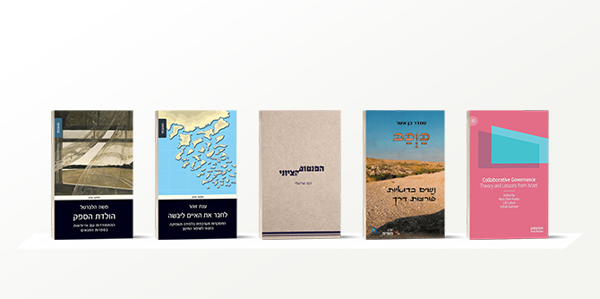

Five new books have been added to the publications of Mandel faculty members in the last year. Three of them are the works of faculty members of the Mandel School for Educational Leadership:
Connecting Islands to Form a Continent by Professor Anat Zohar;
The Birth of Doubt by Professor Moshe Halbertal; and Collaborative Governance: Theory and Lessons from Israel, co-edited by faculty member Dr. Neta Sher-Hadar with Dr. Lihi Lahat and Professor Itzhak Galnoor. The other two books are by faculty members of the Mandel Center for Leadership in the Negev:
Kauqab – Trailblazing Bedouin Women by Professor Smadar Ben-Asher, and The Zionist Phantom by Professor Dana Arieli. These books are products of different perspectives and academic disciplines, but share a call for leaders to take a courageous look at existing realities, to challenge them, and to identify possibilities for educational and social improvement.
Connecting Islands to Form a Continent: Improving Education by Deep Learning across the School System
By Professor Anat Zohar
Magnes Press (Hebrew)
In her latest book, Connecting Islands to Form a Continent, Professor Anat Zohar asks why Israel’s education system, despite repeated reforms, has continued to tread water and has failed to achieve significant impact. She also asks why various grassroots pedagogical initiatives, many of which have been successful on a small scale and have created islands of excellence, have been unable to connect to form comprehensive change. For many years now, Professor Zohar has been studying the teaching and learning of higher order thinking and their place in current pedagogical theories. She is closely familiar with the various attempts made over the years to implement innovative pedagogical programs in the Israeli education system, some of which she led herself, and argues that despite such developments, these islands of innovation have not been linked together into a coherent whole. The book takes as a case study the reform advanced by Professor Zohar when she served as chair of the Pedagogical Secretariat at the Education Ministry, which involved a comprehensive effort to implement processes of higher order thinking and deep understanding throughout the education system.
The answer she proposes is to shift the focus of reform from change processes that emphasize structures and administration toward broader and deeper pedagogical processes. Professor Zohar interprets the concept of “pedagogy” as being the essence of teaching and learning, which she believes requires in-depth knowledge gained over many years, encompassing theory, research, and traditions of learning. She reminds readers that at the heart of all activity in schools is the acquisition of deep knowledge and thinking strategies, and thus educational change efforts must include elements of “substantive pedagogy” that address these elements rather than target mainly administrative elements. Just as the aim of school-based learning is the construction of knowledge and thinking strategies, so the aim of leaders of pedagogical change should be the acquisition of deep knowledge about teaching processes and their implementation – from the early stages of teacher training, through professional development of teachers, to assessment and the planning and development of curricula.
In one of the book’s central chapters, Professor Zohar encourages educational leaders to be instructional leaders – that is, pedagical – and teaching-oriented leaders, who recognize the importance of examining the pedagogical essence of changes, rather than just deciding on the structures of change. This will enable the professionals leading educational change processes to address the deeper goals of teaching and learning in an informed and methodical way, to look for ways to attain these goals, and thus to advance the desired improvement in education in Israel.
Written by Ruth Lehavi
The Birth of Doubt: Confronting Uncertainty in Early Rabbinic Literature
By Professor Moshe Halbertal
Magnes Press (Hebrew)
Brown Judaic Studies (English)
In The Birth of Doubt, Professor Moshe Halbertal examines the halakhic (legal) rulings of the tanaim (the rabbinical sages of the first and second centuries CE), which were formulated in conditions of doubt and uncertainty. The book will also be of interest to readers who are not familiar with early halakhic literature, as the principles that Professor Halbertal proposes for clarifying these rulings are also applicable to the timeless existential need for mediation between the ability to read reality (an ability that is always limited for human beings) and the human desire to operate with certainty in conditions of doubt and to avoid the costs of error they invite.
In a personal conversation about his research, Professor Halbertal spoke about the rabbinical concept of “bein hashmashot” (twilight, literally “between the suns,” which is discussed in chapter 6 of the book. This concept describes a situation in which there is no binary relation between two concepts, of an expression and its opposite (such as certainty and uncertainty). This is an elusive between-time that cannot be delineated and described in words. As such, it is an enabling time: it enables the mixture of the day that is concluding and the night that is beginning; the simultaneous full existence of both day and night; and the point of transition between day and night, which exists but cannot be held. This state of being is defined in philosophy as “vagueness,” which some believe is epistemic in nature (rooted in our ability to identify a phenomenon), while others see it as related to the phenomenon itself. The creation of these vague, borderline spaces gave rise to uncertainty, which enabled the sages to issue unexpected halakhic rulings, since law usually prefers binary situations. It also created a space for discourse about the vagueness itself and its character. As Professor Halbertal explains, these gave rise to additional and desirable spaces for opportunities for expanding the social structure, and for “bold developments” in halakha, as he puts it.
Collaborative Governance: Theory and Lessons from Israel
Editors: Dr. Neta Sher-Hadar, Dr. Lihi Lahat, and Professor Itzhak Galnoor
Palgrave Macmillan (English)
Collaborative Governance: Theory and Lessons from Israel, edited by Mandel faculty member Dr. Neta Sher-Hadar, Dr. Lihi Lahat, and Professor Itzhak Galnoor, contains a collection of studies on collaborative governance – cooperative efforts involving multiple sectors intended to improve the process of policy design and implementation. These studies are the product of a research group, led by Dr. Sher-Hadar and Dr. Lahat, which operated at the Center for Social Justice and Democracy in Memory of Yaakov Chazan at the Van Leer Jerusalem Institute. The group members were drawn from a range of disciplines in both academic research and social and public action, and their joint research combined theory with its translation into practice, and back again into research and theory, while examining arrangements for collaborative governance and their contribution to the advancement of public values and democracy.
By examining the Israeli case and the changes that have occurred in recent years in cross-sector collaboration arrangements, the studies identify several factors that influence the ability of such arrangements to successfully promote public values, such as greater trust between government institutions and citizens, access to the public sphere, and equality in the balance of power between the different actors. Concerning the democratic aspects, the mechanisms of collaborative government enable the expression of the values and desires of different stakeholders in the promotion of public values, encourage taking responsibility by all actors involved, and strengthen the structure of democracy. The question remains, however, as to whether these mechanisms also strengthen democratic processes.
Among other things, the editors stress that it is not sufficient to have mechanisms for collaboration, which facilitate greater expression for more participants than in the past; rather, it is vital to constantly strengthen the democratic approach in collaborative governance arrangements, for example, by bolstering pluralism, involvement in the political-democratic process, the place of partners from civil society, and the awareness and capabilities of the civil service.
In the current age – in which democratic processes are being weakened while the nature of the relations between central government, local government, and civil society organizations is changing – it is to be hoped that the book’s conclusions will be considered by leaders seeking to promote public values and democracy in Israel.
Kauqab – Trailblazing Bedouin Women
By Professor Smadar Ben-Asher
Mofet Institute (Hebrew)
Kauqab, by Professor Smadar Ben-Asher, is a book full of both hope and despair. The truth it uncovers – the here-and-now reality of Israel in the twenty-first century – is a world of “enslavement.” With a compassionate, empathic, and non-judgmental eye, and a wonderfully sensitive hand, Ben-Asher paints the picture of how various remarkable women cope with this reality. One element of how these women deal with their fate lies within their own consciousness; another lies in their interaction with figures in their immediate circles and beyond who give them hope; and yet another is located in the battleground between them and their oppressors. There is such great hope hidden in the ability of these women, driven by courage and self-belief, to move around the borderlines that are unspoken but clearly felt, to break through them and not retreat. Ben-Asher listens to these women, enables them, moves them forward, encourages them to speak, and gives added meaning to their words.
Her book is intended to open our eyes and serve as a window and a mirror. It offers a view into a hidden world; it is a mirror that reflects what is inside more than what is outside; and it is a window to a horizon of hope and change. Not too dramatic a change, but a change that is nonetheless visible. A change that can be aspired to and achieved. We learn that every woman has a name, every daughter and sister and mother, every woman who gives birth, feeds her children, clothes them and launders for them, churns milk and bakes bread, and is silent. And we learn that every woman who is beaten has a name, who is turned away, driven out, every woman whose husband marries a second wife, every daughter whose father marries for the third and fourth time.
Kauqab should be translated into Arabic so that Amal (“hope” in Arabic, and also the name of one of the book’s heroines) can enter the hearts of the men and women whom Ben-Asher wants to release from their prisons of being. The keys to this release are listening, courage, and tolerance, and perhaps this is a combination of Bedouin forbearance with Ben-Asher’s soft and compassionate approach: another dunam (a measure of land equivalent to approximately 900 square meters), another house, another tree, and another woman freed from enslavement.
The Zionist Phantom
By Professor Dana Arieli
Limited edition art book, self-published (Hebrew)
In this, the last book in her Phantom trilogy (which includes The Nazi Phantom: A Journey After the Relics of the Third Reich, published by Resling in 2014, and Phantom: Journeys After the Relics of Dictatorships, self-published as a limited edition in 2016), Professor Arieli combines two passions: photography and research. The Zionist Phantom presents a photography project that Arieli has been working on for more than a decade. In her travels throughout Israel, Arieli documents mainly memorial sites and spaces (such as monuments and museums about the history of the Jewish people) alongside structures (such as abandoned factories) or disputed sites located at the heart of the Jewish-Arab conflict and which reflect its history.
Arieli’s continuing engagement with ruins and abandoned sites – or as she calls them, “phantoms” – dovetails with her strong interest in architectural photography. Alongside these, she researches the interrelations between art and trauma, mainly as expressed in Israel and Germany. In her previous books, and particularly in Romanticism of Steel: Art and Politics in Germany, Arieli sought to map the theoretical path linking art and politics, while in the Phantom trilogy she examines the subjects of her research from a creative perspective.
The Zionist Phantom set contains approximately 160 photographs, which can be leafed through like an old-fashioned card index box. It also includes a book containing more than 180 responses from different writers (out of some 600 that were collected on a website that was specially designed for the project), and which can be viewed
here.
{kind=link}
{kind=link}
{kind=link}
{kind=link}
{kind=link}
{kind=link}